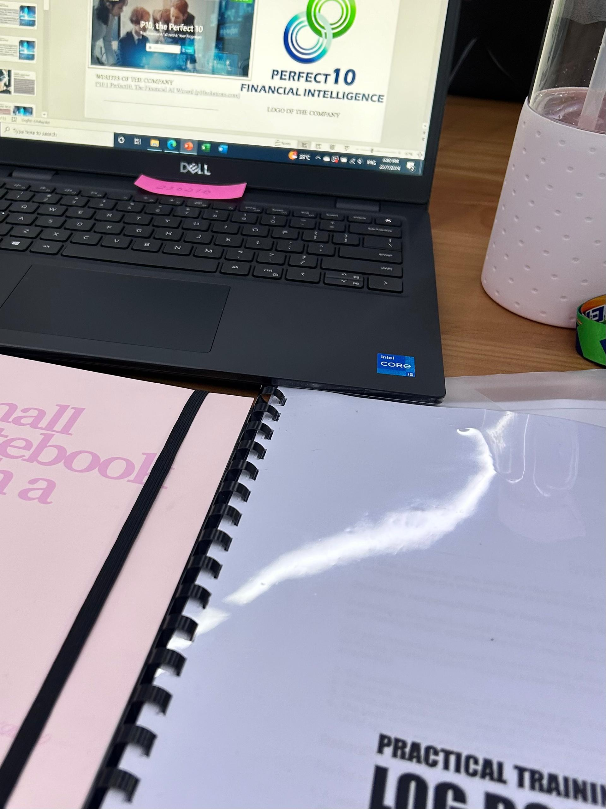

My Internship Journey
- Story: During my internship at a BFSI company, I had the opportunity to work in a dynamic environment with a primarily Chinese team. On my first day, I wasn’t alone, another intern from Seychelles, making English for daily use. This multicultural environment helped improve my English. My strict yet supportive supervisor guided me to grow professionally, teaching me respect, resilience, and professionalism. This experience strengthened my English skills and provided valuable lessons that enhanced both my confidence and proficiency.
- Emotion: i felt so relieved after finished my internship like i could sleep whatever i wants